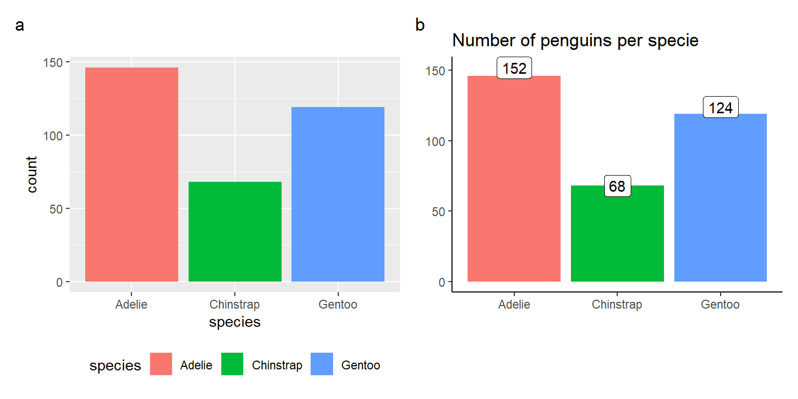

Introduction
Setup
We start by loading all the necessary packages. There’s quite a few, but they will allow us to make pretty plots.
Throughout this tutorial we will use various plot themes, we will change the various aspects of the plots aesthetics to get comfortable with customizing the figures. We will see Some of them will help us tell the story, others will be a matter of taste. In all cases we will learn how to plot the data, how to change the way it is plotted, but also, you will hopefully learn which themes and settings you like most.
# the package of all packages
library(tidyverse)
# penguins data set
library(palmerpenguins)
# scientific journal and sci-fi themed color palettes
library(ggsci)
# various themes for ggplot2 plots
library(ggthemes)
# composer of plots
library(patchwork)
# dealing with overlapping densities
library(ggridges)
# pairwise plots
library(GGally)LTER Penguins
Data visualization warm up with creating data visualizations in general.
In this tutorial we will work primarly with the penguins dataset.

The penguins dataset contains information about 344 penguins - their specie name, the island they are from, their sex and year the measurements were taken; together with measurements: bill length and depth, flipper length, and body mass.

Let’s see few random rows to get a better sense of the data.
penguins %>%
slice_sample(n = 3)We can look at the dataset with the built-in function summary(), although it is a little bit messy. That’s where data visualization comes in handy!
penguins %>%
summary() species island bill_length_mm bill_depth_mm
Adelie :152 Biscoe :168 Min. :32.10 Min. :13.10
Chinstrap: 68 Dream :124 1st Qu.:39.23 1st Qu.:15.60
Gentoo :124 Torgersen: 52 Median :44.45 Median :17.30
Mean :43.92 Mean :17.15
3rd Qu.:48.50 3rd Qu.:18.70
Max. :59.60 Max. :21.50
NA's :2 NA's :2
flipper_length_mm body_mass_g sex year
Min. :172.0 Min. :2700 female:165 Min. :2007
1st Qu.:190.0 1st Qu.:3550 male :168 1st Qu.:2007
Median :197.0 Median :4050 NA's : 11 Median :2008
Mean :200.9 Mean :4202 Mean :2008
3rd Qu.:213.0 3rd Qu.:4750 3rd Qu.:2009
Max. :231.0 Max. :6300 Max. :2009
NA's :2 NA's :2 But before we move on to the data visualization we need to check if we have missing data.
penguins %>%
filter(!complete.cases(.))As you can see we have 11 observations with missing sex, including two which are missing bill and flipper measurements as well.
There are many ways to deal with the missing data:
- we can delete the observations that are missing observations,
- we can fill them with mean or median value for the group,
- we can impute them using models for example k-nearest neighbors
- or even use sophisticated models to generate the missing observations.
How you deal with missing data is very much data, analysis and sometimes, personal preference, dependent. In this case, we will simply ignore the observations, as the goal of the tutorial is to create nice visualizations. Outside of the tutorial I would strongly recommend you take great care with missing data.
Further reading on missing data:
- Missing data: A statistical framework for practice by James R. Carpenter and Melanie Smuk from London School of Hygiene & TropicalMedicine, London, UK
- LSHM hub with resources on missing data
- Understanding and Handling Missing Data by marina wyss
Let’s filter out the missing data and create a data frame we will be working from now on.
penguins_complete_df <-
penguins %>%penguins_complete_df <-
penguins %>%
filter(complete.cases(.))Data summaries
First thing we want to understand about the data are summaries:
- how many observations per type do we have?
- what is the distribution of the values?
- what groups do we have in the data?
Barplots
Let’s start with basics - how many penguins per specie do we have in the dataset? Below, you see two plots presenting the same information with slightly modified, customized looks. In my opinion, panel b is more readable; however, the changes here are more cosmetic than substantial. Precisely why they are a great opportunity to tweak ggplot2.

Let’s start with recreating the minimal example, panel a.
penguins_complete_df %>%
ggplot(aes(x = ___)) +
geom_bar(aes(fill = ___)) +
theme(legend.position = ___)penguins_complete_df %>%
ggplot(aes(x = species)) +
geom_bar(aes(fill = species)) +
theme(legend.position = "bottom")And now, let’s try to customize it such that it resembles the panel b.
penguins_complete_df %>%
ggplot(aes(x = ___)) +
geom_bar(aes(fill = ___)) +
geom_label(data = (penguins %>%
group_by(___) %>%
summarise(count = n())),
aes(x = ___, y = ___, label = ___)) +
theme_classic() +
theme(___ = "none") +
labs(x = ___. y = ___.
title = ___)# this is a more complicated, but easier to read figure
penguins_complete_df %>%
ggplot(aes(species)) +
geom_bar(aes(fill = species)) +
geom_label(data = (penguins %>%
group_by(species) %>%
summarise(count = n())),
aes(x = species, y = count, label = count)) +
theme_classic() +
theme(legend.position = "none") +
labs(x = "Specie", y = "Count",
title = "Number of penguins per specie")Histograms
Next thing we want to know is the distribution of values. For that we can use histograms. binwith is the parameter controlling the width of the bar - i.e. it controls the width of the interval in which observations will be counted. What is the best value of binwith for body mass? Try multiple options and observe how the plot changes.
penguins_complete_df %>%
ggplot(aes(body_mass_g)) +
geom_histogram(binwidth = ___) +
labs(x = "Body mass (g)",
y = "Count",
title = "Distribution of body mass") +
theme_linedraw()penguins_complete_df %>%
ggplot(aes(body_mass_g)) +
geom_histogram(binwidth = 100) +
labs(x = "Body mass (g)",
y = "Count",
title = "Distribution of body mass") +
theme_linedraw()Alternatively, we can use bins parameter which will create intervals based on the amount of bars we want to see on the plot.
Densities
Another way to look at the distribution of data is to look at the geom_density.
# helper tibble to clean up the facet titles
better_facets_df <-
tibble(measurement_type = c("bill_depth_mm",
"bill_length_mm",
"flipper_length_mm",
"body_mass_g"),
measurement_title = c("Bill depth (mm)",
"Bill length (mm)",
"Flipper length (mm)",
"Body mass (g)"))
penguins_complete_df %>%
pivot_longer(names_to = "measurement_type",
values_to = "value",
c(ends_with("mm"))) %>%
ggplot(aes(value, fill = sex)) +
geom_density(alpha = 0.4) +
facet_wrap(~measurement_type, scales = "free", ncol = 1) +
scale_fill_jco() +
theme_linedraw() +
theme(axis.title.x = element_blank(), legend.position = "none") +
labs(y = "Density")We can improve the plot by removing the overlap which introduces the feeling of messiness.
penguins_complete_df %>%
pivot_longer(names_to = "measurement_type",
values_to = "value",
c(ends_with("mm"))) %>%
left_join(better_facets_df) %>%
ggplot(aes(value, y = sex, fill = sex)) +
geom_density_ridges() +
facet_wrap(~measurement_title, scales = "free", ncol = 1) +
scale_fill_jco() +
theme_linedraw() +
theme(axis.title = element_blank(),
legend.position = "none") +
labs(title = "Bill and flipper dimensions with respect to sex",
subtitle = paste("Dimensions for Adelie, Chinstrap and Gentoo",
"Penguins at Palmer Station LTER"))Joining, by = "measurement_type"Picking joint bandwidth of 0.592Picking joint bandwidth of 1.66Picking joint bandwidth of 4.38Now, let’s investigate those measurements with respect to specie.
penguins_complete_df %>%
pivot_longer(names_to = "measurement_type",
values_to = "value",
c(ends_with("mm"))) %>%
left_join(better_facets_df) %>%
ggplot(aes(value, y = ___, fill = ___)) +
geom_density_ridges(rel_min_height = 0.01) +
facet_wrap(~___, scales = ___, ncol = 1) +
scale_fill_manual(values = c("darkorange", "purple", "cyan4")) +
theme(axis.title = element_blank(),
legend.position = ___) +
labs(title = "Bill and flipper dimensions with respect to specie",
subtitle = paste("Dimensions for Adelie, Chinstrap and Gentoo",
"Penguins at Palmer Station LTER"))penguins_complete_df %>%
pivot_longer(names_to = "measurement_type",
values_to = "value",
c(ends_with("mm"))) %>%
left_join(better_facets_df) %>%
ggplot(aes(value, y = species, fill = species)) +
geom_density_ridges(rel_min_height = 0.01) +
facet_wrap(~measurement_title, scales = "free", ncol = 1) +
scale_fill_manual(values = c("darkorange", "purple", "cyan4")) +
theme(axis.title = element_blank(),
legend.position = "none") +
labs(title = "Bill and flipper dimensions with respect to specie",
subtitle = paste("Dimensions for Adelie, Chinstrap and Gentoo",
"Penguins at Palmer Station LTER"))Boxplots, violin plots
Boxplots allow us to summarize our data providing visual guide to values such as median and quartiles. Violin plots provide a compact visualization of continuous distributions.

Boxplot and a probability density function (pdf) of a Normal N(0,1σ2) Population from Wikipedia; Q1, Q3 are lower and upper quartiles, respectively; IQR - interquartile range
Quartile - special case of quantile - point that split distribution into equal parts. There are 3 quartiles: Q1, Q2, and Q3. Q1, also called lower quartile, splits off the lowest 25% of data from the highest 75%. Q2, also called median, cuts the data in half. Q3, in turn, splits off the highest 25% of data from the lowest 75%. Another special case of quantiles are percentiles (they split the data into 1% slices). Q1 is equivalent of 25th percentile, Q2 of 50th and Q3 of 75th percentile. Interquartile range (IQR) - spread between upper and lower quartile; IQR = Q3 - Q1
violin_box_plt <-
penguins_complete_df %>%
ggplot(aes(species, body_mass_g, group = interaction(species, sex))) +
geom_violin(aes(fill = sex),
position = position_dodge(width = 0.9)) +
geom_boxplot(outlier.size = 0, width = 0.2,
position = position_dodge(width = 0.9)) +
theme_clean() +
scale_fill_jco() +
theme(legend.position = "bottom", axis.title.x = element_blank()) +
labs(title = "Penguins body mass with respect to species",
y = "Body mass (g)",
fill = "Sex")
jitter_box_plt <-
penguins_complete_df %>%
ggplot(aes(x = species, y = body_mass_g, group = interaction(species, sex))) +
geom_point(aes(color = sex), position = position_jitterdodge()) +
geom_boxplot(alpha = 0.6, outlier.size = 0,
position = position_dodge2(padding = 0.7)) +
theme_clean() +
scale_color_jco() +
theme(legend.position = "bottom", axis.title.x = element_blank()) +
labs(title = "Penguins body mass with respect to species",
y = "Body mass (g)",
color = "Sex")
violin_box_plt + jitter_box_plt +
plot_annotation(tag_levels = 'a')Questions
- Which of the above - panel
aor panelbyou like more? Why?
- What you can see in one but not the other and vice versa?
Trends in data
Now we will investigate x-y relationships. How does y change depending on x? Is there some
What is the relationship between bill and flipper length?
penguins_complete_df %>%
ggplot(aes(bill_length_mm, flipper_length_mm)) +
geom_point() +
geom_smooth(se = FALSE, method = "lm", formula = "y ~ x") +
labs(x = "Bill length (mm)",
y = "Flipper length (mm)",
title = "Correlation between flipper and bill length") +
theme_economist() +
scale_colour_economist() And what about body mass and bill depth?
penguins_complete_df %>%
ggplot(aes(body_mass_g, bill_depth_mm)) +
geom_point() +
geom_smooth(se = FALSE, method = "lm", formula = "y ~ x") +
labs(x = "Body mass (g)",
y = "Bill depth (mm)",
title = "Bill depth as a function of body mass") +
theme_wsj() +
theme(title = element_text(size = 16))Why can that plot be misleading?
Simpson’s paradox
It’s a perfect time to read up on phenomenon in which the trend in several groups appears to be a reverse of the trend for all groups together. It is commonly known as Simpson’s paradox (although some argue this is not a paradox). More on wikipedia and in a nice video by minutephysics.

Rafael Irizarry (@rafalab) visualisation of Simpson’s paradox
Exercise: How can you show that on the body mass and bill depth plot?
penguins_complete_df %>%
ggplot(aes(body_mass_g, bill_depth_mm, color = ___)) +
geom_point() +
geom_smooth(se = FALSE, method = "lm") +
scale_color_manual(values = c("darkorange", "purple", "cyan4")) +
labs(x = "Body mass (g)",
y = "Bill depth (mm)",
title = "Bill depth as a function of body mass") +
theme_wsj() +
theme(title = element_text(size = 16))penguins_complete_df %>%
ggplot(aes(body_mass_g, bill_depth_mm, color = species)) +
geom_point() +
geom_smooth(se = FALSE, method = "lm") +
scale_color_manual(values = c("darkorange", "purple", "cyan4")) +
labs(x = "Body mass (g)",
y = "Bill depth (mm)",
title = "Bill depth as a function of body mass") +
theme_wsj() +
theme(title = element_text(size = 16))Exercise: If we simply plot bill dimensions we can’t see much organization to the data. Is there something interesting you can show by adding the colors aes(color = ?) and/or splitting the data by a variable facet_wrap(~?)?
penguins_complete_df %>%
ggplot(aes(x = bill_length_mm, y = bill_depth_mm)) +
geom_point() +
theme_linedraw() +
theme(legend.position = "none") +
labs(x = "Bill length (mm)",
y = "Bill depth (mm)",
title = "Bill dimensions",
subtitle = paste("Dimensions for Adelie, Chinstrap and Gentoo",
"Penguins at Palmer Station LTER"))# that's just one of the options
penguins %>%
filter(complete.cases(.)) %>%
ggplot(aes(x = bill_length_mm, y = bill_depth_mm, color = sex)) +
geom_point() +
geom_smooth(method = "lm", se = FALSE, color = "black") +
scale_color_jco() +
theme_linedraw() +
theme(legend.position = "none") +
facet_wrap(~species) +
labs(x = "Bill length (mm)",
y = "Bill depth (mm)",
title = "Bill dimensions",
subtitle = paste("Dimensions for Adelie, Chinstrap and Gentoo",
"Penguins at Palmer Station LTER"))We can also plot all the relationships at once using the baseR function.
penguins_complete_df %>%
select(bill_length_mm, bill_depth_mm,
flipper_length_mm, body_mass_g) %>%
pairs()However, it is quite difficult to customise it.
penguins_complete_df %>%
select(bill_length_mm, bill_depth_mm,
flipper_length_mm, body_mass_g) %>%
pairs(bg = c("darkorange", "purple", "cyan4")[unclass(penguins_complete_df$species)],
pch = 21,
labels = c("Bill length (mm)", "Bill depth (mm)",
"Flipper length (mm)", "Body mass (g)"),
oma = c(3, 3, 3, 15))
par(xpd = TRUE)
legend("bottomright",
fill = c("darkorange", "purple", "cyan4"),
legend = levels(penguins_complete_df$species))We can create such plots using GGally package. Read more about the package in the online manual.
penguins_complete_df %>%
ggpairs(columns = c("bill_length_mm", "bill_depth_mm",
"flipper_length_mm", "body_mass_g"),
columnLabels = c("Bill length (mm)", "Bill depth (mm)",
"Flipper length (mm)", "Body mass (g)"),
mapping = aes(color = species),
upper = list(continuous = wrap(ggally_cor, display_grid = FALSE)),
diag = list(continuous = wrap(ggally_densityDiag, alpha = 0.7)),
title = "Scatter plot of dimensions of Penguins at Palmer Station LTER") +
scale_color_manual(values = c("darkorange", "purple", "cyan4")) +
scale_fill_manual(values = c("darkorange", "purple", "cyan4")) More complex visualizations
UpSet
Venn (Euler) Diagrams are plots with typically overlapping circles or ellipsis that show the amount of overlap between sets (panel a on a figure below). They are suitable for up to 3 sets, but are very hard to read for more than that (look at banana figure below). When the number of sets increases, UpSet plots are a great alternative to Venn (Euler) Diagrams (panel c).

Figure from Sets and intersections
To read more about UpSetR please refer here.
library(UpSetR)
mutations <- read.csv(system.file("extdata", "mutations.csv",
package = "UpSetR"),
header = T, sep = ",")
upset(mutations, sets = c("PTEN", "TP53", "EGFR", "PIK3R1", "RB1"),
sets.bar.color = "#56B4E9",
order.by = "freq", empty.intersections = "on")Heatmap
There are multiple packages that help plot the heatmaps, however, in my opinion, ComplexHeatmap is the one that allows the highest degree of customisation and comes with extensive manual. I highly recommend.
library(ComplexHeatmap)
penguins_mat <-
penguins_complete_df %>%
select(bill_length_mm, bill_depth_mm,
flipper_length_mm, body_mass_g) %>%
as.matrix()
sex_cols <- pal_jco()(2)
names(sex_cols) <- levels(penguins_complete_df$sex)
species_cols <- c("darkorange", "purple", "cyan4")
names(species_cols) <- levels(penguins_complete_df$species)
column_labels <-
c("Bill depth (mm)", "Bill length (mm)",
"Flipper length (mm)", "Body mass (g)")
names(column_labels) <-
c("bill_depth_mm", "bill_length_mm",
"flipper_length_mm", "body_mass_g")
ha <-
HeatmapAnnotation(Species = penguins_complete_df$species,
Sex = penguins_complete_df$sex, which = "row",
col = list(Sex = sex_cols, Species = species_cols))
penguins_ht <-
Heatmap(scale(penguins_mat), col = viridis::viridis(100),
cluster_columns = FALSE, split = 3, column_names_rot = 45,
column_labels = column_labels[colnames(penguins_mat)],
name = "Scaled measurement", right_annotation = ha)
penguins_htInteractivity
There are many ways to create interactive plots in R, but by far the easiest is with plotly package. You can learn more about the package here.
Try selecting and deselecting particular specie. Or zooming in to see particular observation.
library(plotly)
paradox_plot <-
penguins_complete_df %>%
ggplot(aes(body_mass_g, bill_depth_mm, color = species)) +
geom_point() +
geom_smooth(se = FALSE, method = "lm") +
scale_color_manual(values = c("darkorange", "purple", "cyan4")) +
labs(x = "Body mass (g)",
y = "Bill depth (mm)",
title = "Bill depth as a function of body mass",
color = "Species") +
theme_wsj() +
theme(title = element_text(size = 16), legend.position = "right",
legend.direction = "vertical")
ggplotly(paradox_plot)Ps. ComplexHeatmap can be also easily turned into an interactive heatmap - you just need one more package InteractiveComplexHeatmap. I highly recommend to give it a go! Read more here.
Animation
In some cases, it is quite helpful to represent the data as an animation. The best package to start creating animations in R with is gganimate. Read more about, and browse examples for inspiration, here.
Creating the animation was slowing down the tutorial, therefore I executed the code earlier, saved the animation and load it in from file.
library(gganimate)
penguins_complete_df %>%
ggplot(aes(sex, body_mass_g)) +
geom_boxplot() +
# Here comes the gganimate code
transition_states(
year,
transition_length = 2,
state_length = 1
) +
enter_fade() +
exit_shrink() +
ease_aes('sine-in-out') +
# the end of gganimate code, now, just cosmetic changes
theme_wsj() +
theme(axis.title = element_text()) +
labs(title = "Penguins body mass",
subtitle = 'Year: {closest_state}',
x = "Sex",
y = "Body mass (g)")
anim_save("images/gganimate_demo.gif")
Great Data Viz R Resources
Used in this tutorial:
- palmerpenguins - Great toy dataset for data exploration & visualization
- tidyverse - world of gold R packages for data wrangling, exploration and visualization; core tidyverse packages include: ggplot2, dplyr, tidyr, readr, purr, tibble, stringr and forcats
- ggsci - Scientific Journal and Sci-Fi Themed Color Palettes for ggplot2
- ggthemes - extra themes and geometries for ggplot2
- ggridges - ridgeline plots allowing for better densiies visualization
- patchwork - grammar for combinig multiple plots
- GGally - extension to ggplot2 to create pariwise plots
- UpSetR - better Venn Diagrams
- ComplexHeatmap - master package for creating customised Heatmaps
- plotly - interactive ggplots
- gganimate - animated ggplots
Not used in this tutorial but highly recommended:
- ggforce - great tools to highlighting and decorating gglots
- ggpubr - ggplot2 extension to plot publication ready figures
- ggrepel - ggplot2 extension to deal with overlapping text
- InteractiveComplexHeatmap - interactivity extension for ComplexHeaatmap
Links to inspire yourself:
- The R Graph Gallery
- Data Imaginist - blog of Thomas Lin Pedersen creator of patchwork and ggforce
- Website of Claus O. Wilke - author of Fundamentals of Data Visualization (book) and ggridges (package)
- Website of Kieran Healy - author of Data Visualization: A Practical Introduction.
Exercises
- Explain why Anscombe’s quartet is a great example of importance of data visualization. Don’t forget to add a plot to you explanation!
- Put together a visually appealing infographic describing the
ggplot2movies::moviesdataset. Select the key figures, decorate them with key annotations and showcase the most important things about the dataset. Write down the points you want to make and the stories you want to tell by those figures.
Run the following command in your console to learn more about the dataset. It should open a description in the Help pane.
?ggplot2movies::movies